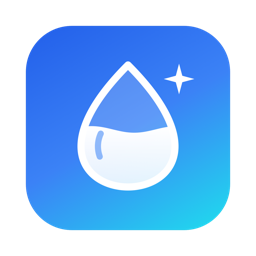

Clean MacClean Mac – Privacy Policy
Last updated: October 22, 2026
Clean Mac is a macOS menu bar utility that shows your disk usage and helps you remove caches and other files you choose. This policy explains how Clean Mac handles your information.
Summary
Clean Mac does not collect, store, or share any personal data. Everything the app does happens locally on your Mac.
Data collection
- Clean Mac does not collect any data about you or your use of the app.
- There is no account and no sign-in.
- There are no analytics, no tracking, no advertising, and no third-party SDKs.
- Clean Mac makes no network requests. It does not send any information off your Mac.
Data processed on your Mac
To do its job, Clean Mac reads file and folder information on your Mac, such as names, locations, sizes, and dates of caches and of the files shown in Deep Scan. This information is processed only on your Mac and never leaves it. Clean Mac does not open or read the contents of your documents.
Clean Mac keeps a small local history of cleanups (date, items, sizes, and where items were moved in the Trash) so that you can review past cleanups and use Undo. It also stores your settings. This information stays on your Mac, in the app's own container, and is removed when you delete the app. You can clear the history in Settings at any time.
Permissions
- Home folder access: macOS asks you once to allow access to your Home folder, because app caches are stored in the Library folder inside it. This access is used only to find, measure, and move caches and the files you select to the Trash.
- Full Disk Access (optional): lets Clean Mac also clean caches that macOS keeps in some apps' protected containers. You can turn it off at any time in System Settings → Privacy & Security → Full Disk Access.
- Notifications (optional): used only to tell you when disk space runs low.
Children
Clean Mac does not collect any data from anyone, including children.
Changes to this policy
If this policy changes, the updated version will be published at this address with a new date.
Contact
If you have questions about this policy, please get in touch.
Contact: open an issue at github.com/JavohirYakubov/clean-mac-site/issues.